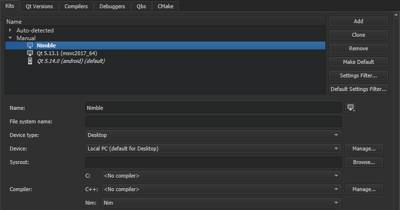

Setting Up Nimble
Nimble is a package manager for the Nim programming language. It is delivered with Nim and uses the Nim compiler to generate executables that are supported on Windows, Linux, and macOS.
To use Qt Creator for Nim development, you need to enable the experimental Nim plugin. Select Help > About Plugins > Other Languages > Nim. Then select Restart Now to restart Qt Creator and load the plugin.
In addition, you have to download and install Nim and set up a Nim kit in Qt Creator.
You can use wizards to create Nim and Nimble projects.
Setting Up the Development Environment
To configure Qt Creator to build Nim executables:
- Select Tools > Options > Kits Compilers > Add > Nim to specify the path to the the Nim compiler.
- Select Apply to add the compiler.
- Select Kits > Add to add a kit for building applications with Nimble:

- In the Name field, specify a name for the kit.
- In the Compiler group, Nim field, select the Nim compiler you added above.
- Select Apply to add the kit.
Creating Nimble Applications
To use a wizard to create boilerplate files for a Nim package that is managed with Nimble:
- Select File > New File or Project > Projects > Non-Qt Project > Nimble Application.
- Specify the name and location of the application.
- Select Next.
- Specify information about your application package.

- Select Next to create the project.